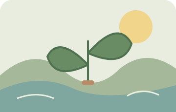

⌕
Elegí una puerta
Entrá a una categoría o escribí lo que necesitás en el buscador.
Libros, ideas, mapas, juegos, láminas y recursos para llevar a casa. Una biblioteca sencilla, abierta y gratuita para recorrer a tu manera.
Pasá, estás en tu casa.
Acá no hace falta saber mucho de tecnología: elegí, mirá y descargá.
Nueve caminos para recorrer. Elegí el que más te guste; siempre podés volver y probar otro.
Materiales listos para abrir, guardar o imprimir. Cada ficha cuenta qué es y cómo podés usarlo.
No necesitás crear una cuenta ni instalar nada. Todo está pensado para que encuentres lo que buscás sin perderte.
Entrá a una categoría o escribí lo que necesitás en el buscador.
Leé la descripción y abrí la vista previa para saber qué vas a encontrar.
Descargá el archivo y usalo según las condiciones indicadas en su ficha.

DE ACÁUn lugar para guardar y compartir historias, paisajes, naturaleza, memoria y pequeñas cosas de San Patricio del Chañar y sus alrededores.
Estamos preparando esta colección con cuidado.Nada se paga para entrar, leer o descargar.
Reconocemos a quienes crean y cuidamos sus derechos.
Materiales claros, útiles y fáciles de encontrar.
Lo que te sirve puede ayudar a otra persona.
La biblioteca es gratuita y seguirá abierta para todos. Si alguna vez querés colaborar con su mantenimiento, podés hacerlo de manera voluntaria. Y si no podés, compartirla también es una forma hermosa de ayudar.
Hay lugar para todos en esta ronda.
✿